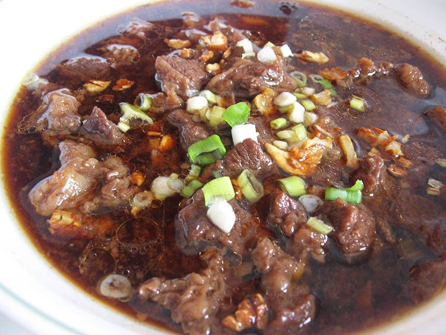

Pares

Description
Beef Pares are cubed beef briskets cooked with spices and tenderized to perfection. The aroma of this dish alone is enticing. The taste is captivating.
Ingredients
- 3 lbs. beef chuck cut into cubes
- 1 piece Knorr Beef Cube
- 3 pieces star anise
- 1 piece onion chopped
- 4 cloves garlic chopped
- 3 thumbs ginger minced
- 1/4 cup soy sauce
- 3 tablespoons brown sugar
- 2 tablespoons cooking oil
- 1 tablespoon onion powder
- 1/4 teaspoon ground black pepper
- 3 quarts water
- 4 tablespoons cornstarch
- Salt to taste
Steps
- Make the beef pares by heating oil in a cooking pot. Add beef fat. Saute for 2 minutes.
- Add onion, garlic, and ginger. Saute until the onion gets tender.
- Add beef. Cook until color turns medium brown (this usually takes 5 minutes).
- Pour-in water. Let boil.
- Add star anise and Knorr Beef Cube. Cover the pot and adjust the heat to low. Cook for 2 to 2 1/2 hours or until beef gets very tender.
- Season with soy sauce, onion powder, ground black pepper, brown sugar, and salt. Stir.
- Make the garlic fried rice by heating oil in a pan. Add crushed garlic. Saute until garlic turns golden brown. Add leftover rice. Stir until all ingredients are well blended. Season with salt. Stir and cook for 3 to 5 minutes. Set aside.
- Arrange beef pares in a bowl and top with chopped green onions.
- Arrange garlic fried rice in another bowl and top with chopped green onions too.
- Serve hot! Share and enjoy!